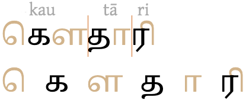
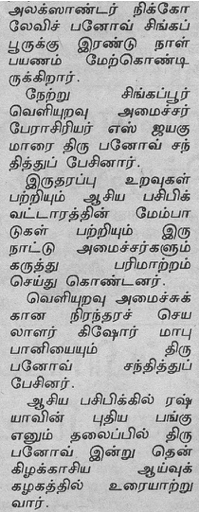
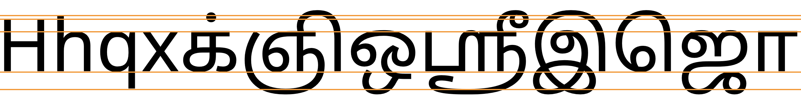

This page brings together basic information about the Tamil script and its use for the Tamil language. It aims to provide a brief, descriptive summary of the modern, printed orthography and typographic features, and to advise how to write Tamil using Unicode.
Tamil has a fairly complicated set of rules and variations on pronunciation, and the writing system abstracts away from the detail. Phonetic transcriptions on this page should be treated as an approximate guide, only. Many are more phonemic than phonetic, and there may be variations depending on the source of the transcription. For example, the symbol a represents a set of central sounds which may be written a, ə, or ʌ in more detailed transcriptions.
Sample
Select part of this sample text to show a list of characters, with links to more details. Change size: 28px
The Tamil script is used for writing the Tamil language, a Dravidian language spoken by over 65,500,000 people in India, Sri Lanka, Singapore, Malaysia and Mauritius. Tamil is an official language in the south Indian state of Tamil Nadu as well as in Sri Lanka and Malaysia. It is also used to write the liturgical language Sanskrit, using consonants and diacritics not represented in the Tamil alphabet. Certain minority languages such as Saurashtra, Badaga, Irula, and Paniya are also written in the Tamil script.
An old Tamil script derived from Brahmi, and dates back to the Ashokan period, however this differs in various significant ways from the modern script, which evolved from a new script created during the 6th century Pallava dynasty. It took around 500 years for this new script to spread throughout the Tamil regions. Orthographic reform in the 19th and 20th centuries simplified and regularised the script, removing many ligated forms, to facilitate typesetting.
The script was reformed in the 19th century to make it easier to typeset, and again in the 20th. The advent of printing also brought back the use of the pulli to denote consonants without an inherent vowel, since the difficulty of using such on palm leaves made it become rare.ws
In 1978, in an attempt to simplify the script, the government of Tamil Nadu proposed the reform of certain letters and syllables. See writing_styles for details.
These reforms only spread in India and the digital world, whereas Sri Lanka, Singapore, Malaysia, Mauritius, Reunion and other Tamil speaking regions continue to use the traditional syllables.wss
The Tamil script is an abugida, ie. consonants carry an inherent vowel sound that is overridden using vowel signs or killed using a virama. See the table to the right for a brief overview of features for the modern Tamil orthography.
The Tamil script is written horizontally, left to right.
Words are separated by spaces.
There are fewer consonants than in other Indic scripts. Tamil has no aspirated consonant letters, and symbols are allocated on a phonemic basis, rather than phonetic. This means that க, for example, may be pronounced as the allophones kɡxɣ or h, according to where it appears relative to other sounds in a word, but its pronunciation doesn't change the word. ⯠consonants
The 18 consonant letters used for pure Tamil words are supplemented by 6 more Grantha consonant signs which are used for English and Sanskrit loan words. Repertoire extensions for 4 more non-native sounds are achieved by preceding a consonant with 0B83 (āytam). ⯠consonants
Consonant clusters are indicated using the visible puḷḷi dot (the virama) to indicate that no vowel follows a consonant. Exceptions to the rule are 2 ligated forms (shown just below). ⯠clustersக்ஷk͓ʂkʃʌஶà¯à®°à¯€ÊƒÍ“ɾīʃri
Word-initial clusters do not appear in Tamil. Syllable-/word-final consonants are just written using ordinary consonants with the puḷḷi overhead, eg.
தமிழ்
The Tamil orthography is an abugida with one inherent vowel. Other post-consonant vowels are written using 11 vowel signs , all combining marks. ⯠vowels
Because Tamil uses a visible virama, pre-base and circumgraph vowels are usually arranged around the immediately previous consonant letter, and not around a consonant cluster. This is different from many other Indian scripts.
Although modern Tamil uses fewer conjunct ligatures than most other indic scripts, many ligatures are still needed for a Tamil font, mostly for combinations of base consonant and vowel sign. See vowelligation.
Tamil is diglossic: the classic form is preferred for writing and public speaking, and is mostly standard across the Tamil-speaking regions; the colloquial, spoken form differs widely from the written.
There can also be differences in letter shapes and other typographic approaches between the Tamil used in India and that used in places like Singapore and Malaysia (and even Sri Lanka).
The u and ū vowel signs, and to some extent the i and ī signs, tend to form ligatures with the base consonant. See vowelligation.
For consonant clusters that are indicated using a visible pulli, the vowel sign is associated with the consonant that immediately precedes it phonetically. For example, a vowel sign that is rendered to the left of the base will appear between the consonants in the cluster (see prebase). And where a vowel sign is composed of components that are rendered before and after the base, they will surround just that consonant (see compositeV).
However, for the few consonant clusters that are indicated using conjunct forms, vowel signs are arranged around the conjunct. A vowel sign that is rendered to the left of the base will appear before all the consonants in the syllable onset (see prebase). And where a vowel sign is composed of components that are rendered before and after the base, they will surround the conjuct (see compositeV).
All but one vowel signs are spacing combining characters, ie. they expand the text width when applied to a consonant.
Multipart vowels
Multipart vowels only occur in Tamil when the circumgraphs are decomposed. When they do occur, both combining marks must be typed and stored after the consonant base and in the visual order (see encoding_ce). Click on the following example to see the order of characters in memory.
கொடுkoɖuto give
Standalone vowels
Tamil represents syllable-initial vowels using a set of independent vowel letters.
Independent vowel forms used to be used at the beginning of metrical groups, but now they are used at the beginning of a word, eg.
இந்த
They are also used internally to represent 'overlong' vowel sounds, eg. compare பெரீயpeɾīyperīyareally bigபெரீஇஇயpeɾīịịyperīiiyareeeeally big
Pre-base vowel signs
கெ
keU+0B95 TAMIL LETTER KA + U+0BC6 TAMIL VOWEL SIGN E
Three vowel signs appear to the left of the base consonant letter or conjunct.
ெ␣ே␣ை
These are combining marks that are always stored after the base consonant. The rendering process places the glyph before the base consonant. Click on the following word to see the sequence of characters in storage.
கெடு
Because modern Tamil usually indicates consonant clusters with a visible virama, pre-base vowel signs normally appear before the consonant that immediately precedes them audially (see fig_prebase.
In a consonant cluster, a pre-base vowel glyph usually immediately precedes that of the consonant after which it is pronounced.show composition
எங்கே
However, in versions of the orthography that include conjunct forms the pre-base vowel appears before the whole consonant cluster at the beginning of the orthographic syllable.
Circumgraphs
கொ
koU+0B95 TAMIL LETTER KA + U+0BCA TAMIL VOWEL SIGN O
Three vowels are produced by a single combining character with visually separate parts, that appear on opposite sides of the consonant onset.
ொ␣ோ␣ௌ
Like pre-base glyphs, these are combining marks that are always stored after the base consonant. The rendering process places the glyphs around the base consonant, as needed. Click on the following word to see the sequence of characters in storage.
கொடு
Again, like pre-base vowel signs, in Tamil consonant clusters the circumgraph normally surrounds only the consonant that phonetically precedes it. In the few cases where it is pronounced after a cluster that is rendered as a conjunct, it surrounds the whole conjunct.
In a Tamil consonant cluster, a circumgraph vowel sign usually surrounds just the consonant it is pronounced after.show composition
மீக்கோள்
These circumgraphs have canonically equivalent decomposed forms (see compositeV and encoding_ce).
Show details about vowel glyph positioning.
The following list summarises where vowel signs are positioned around a base consonant to produce vowels, and how many instances of that pattern there are.
3 pre-base, eg. கெke
4 post-base, eg. கூkū
1 superscript, eg. கீkī
3 pre+post-base, eg. கௌkʌʷ
However, some of the vowel signs are tightly integrated with the consonant shape. See vowelligation.
Vowel length
Differences in vowel length are indicated by the choice of vowel sign.
Nasalisation
tbd
Tones
Tamil is not a tonal language.
Vowel sounds to characters
This section maps Tamil vowel sounds to common graphemes in the Tamil orthography, grouped according to whether they are dependent ( d ) or standalone ( s ) forms. Click on a grapheme to find other mentions on this page (links appear at the bottom of the page). Click on the character name to see examples and for detailed descriptions of the character(s) shown.
The basic consonant sounds of the standard Tamil alphabet are represented by the following characters. Note that there are no consonants dedicated only to voiced stops or to fricative sounds.
This list uses hyphens to provide information about the context in which allophonic variants are used (see fig_allophone_table).
The Tamil writing system only represents phonemic differences. The sounds in parentheses in the chart are allophonic variations or sounds used for foreign words. Allophonic variants are not usually indicated in Latin transcriptions.
Plosives are unvoiced if they occur word-initially or doubled. Elsewhere they are voiced, with a few becoming fricatives intervocalically. Nasals and approximants are always voiced.
Wikipedia provides the following useful table for the realisation of the plosive sounds in context.
Letter
Initial
Geminate
Intervocalic
Post-nasal
Labial
ப
p
pː
β~w
b
Dental
த
t̪
t̪ː
ð
d̪
Alveolar
ற
—
tːr
r
(d)r
Retroflex
ட
—
ʈː
ɽ
ɖ
Palatal
ச
tɕ~s
tːɕ
s
dʑ
Velar
க
k
kː
x~∅
ɡ
Allophonic variants for Tamil plosives.wp
The consonants are classified into three categories: vallinam (hard consonants), mellinam (soft consonants, including all nasals), and idayinam (medium consonants). These categories are important for the rules of pronunciation.
The mapping of consonants, in particular the plosives, to phonetic sounds is particularly varied for an indic script. These rules for the pronunciation of consonants for the written form of Tamil make for complementary distribution. However, the rules break down to varying degrees when dealing with Sanskrit loan words and the colloquial spoken form of Tamil (particularly in northern areas). For more read Tamil phonology and Krishnamurthi23-28.
Grantha consonants
Because the core set of Tamil consonants is quite a lot smaller than that of most indic scripts, Tamil adds additional letters from the Grantha script to cover sounds in Sanskrit and English, and complete the basic consonant set.
ஜ␣ஸ␣ஶ␣ஷ␣ஹ␣க்ஷ
The last item in the list just above is actually a cluster of two consonants, but is viewed as a single letter of the alphabet.
For compatability with modern communication, Tamil presses into service ஃ[U+0B83 TAMIL SIGN VISARGA] (called āytam, and not actually a visarga) to produce fricative sounds from stops.
Note that a vowel sign can occur between the visarga and the other consonant – ie. the two are not treated as an indivisible unit, eg.
ஃபோரியர்
(The Unicode name VISARGA was applied in error. At one point, the Unicode Standard also treated this as a combining character, but that has also since been rectified.)
Other extension mechanisms
Superscript numbers
The Unicode Standard describes a method of extension that uses superscript or subscript digits, particularly to represent missing letters in transcriptions of languages such as Sanskrit and Saurashtra. Each number represents the sound that is unvoiced, unvoiced-aspirated, voiced, or voiced-aspirated, respectively, eg. ப¹ = pa, ப² = pha, ப³ = ba, and பⴠ= bha.u
Example of superscript numbers being used for allophone disambiguation.
Grantha script
The Grantha script is often also used by Tamil speakers to write Sanskrit because Grantha contains needed consonants, conjunct forms, and signs.u
Minority languages
A number of minority languages use a nukta symbol to identify sounds for that language. The shape of the nukta can vary. It always appears below the character, and the shape is most commonly a single dot below the letter (as or Chetti), a small open circle (as in Betta Kurumba), or 2 dots side-by-side (as in Irula). The code to use for such nuktas is 𑌻 [U+1133B COMBINING BINDU BELOW].
The puḷḷi is also used to form conjuncts, although there are normally only 2 of those in modern Tamil (see clusters).
ஂ [U+0B82 TAMIL SIGN ANUSVARA] is not used for Tamil. Nor should it be used as a graphical variant of the pulli.s
Onset consonants
Clusters of consonant letters at the beginning of an orthographic syllable occur in Tamil, and they are handled as described in the section clusters.
Final consonants
Syllable-/word-final consonants in Tamil are just written using ordinary consonants with the pulli overhead, eg.
தமிழ்
Consonant clusters
Rather than using conjunct glyphs like most other indic scripts, consonant clusters are normally represented using the puḷḷi dot over the character(s) that are not followed by a vowel, eg.
தீர்ப்பு
There are two common exceptions in modern Tamil orthography, which are conjunct forms: க்ஷk͓ʂkʃஶà¯à®°à¯€ÊƒÉ¾Ä«Êƒri
The ʃri combination only occurs with the vowel i, but can be composed of two different sequences of consonants.
Representation of shrī
The syllable ʃri can be written with two different initial letters: ஶ [U+0BB6 TAMIL LETTER SHA] (ie. ஶà¯à®°à¯€ÊƒÉ¾Ä«) or ஸ [U+0BB8 TAMIL LETTER SA] (ie.ஸ்ரீs͓ɾī). The result looks identical. Since 2005, the Unicode Consortium has recommended use of the former, but both are still in wide circulation, so Unicode 12 recommends that both be treated as equivalent sequences.u
Consonant length
Gemination and consonant lengthening are handled using the normal approach to consonant clusters (see clusters).
Consonant sounds to characters
This section maps Tamil consonant sounds to common graphemes in the Tamil orthography. Click on a grapheme to find other mentions on this page (links appear at the bottom of the page). Click on the character name to see examples and for detailed descriptions of the character(s) shown.
OM is a religious concept found in all three major religions born in India viz. Hinduism, Jainism and Buddhism. ௐ [U+0BD0 TAMIL OM] is widely used in Hindu religious texts, temple publications, and as neon lamps of sign boards in shops etc.
à¯
Encoding choices
Tamil is a script where different sequences of Unicode characters may produce the same visual result. Here we look at those related to vowels.
Canonical equivalence
Three of the circumgraphs can be written as a single character, or as two characters.
The single code point per vowel sign is preferred, however the parts are separated in Unicode Normalisation Form D (NFD), and recomposed in Unicode Normalisation Form C (NFC), so both approaches are canonically equivalent.
The precomposed character decomposes in NFD, and re-forms again in NFC. It is generally recommended to use the precomposed character.
Code point sequences
The following indicates the expected ordering of Unicode characters within a Tamil combining character sequence. The labels are those used for the Unicode Indic Syllabic Categories. Follow the links to see what characters are represented by a given label.
When a base consonant is followed by 2 vowel signs (ie. in decomposed text with circumgraphs) the code point for the glyph that appears to the left of the base when rendered should be the first after the base code point. Otherwise, the sequence will not recompose.
Named character sequences
Tamil speakers tend to think of grapheme clusters containing consonant+vowel as a single entity. In some cases, people want to process Tamil using these grapheme clusters as a single unit.
To assist with this Unicode provides named character sequences that apply standardised names to whole syllables. These can then be mapped to the private use area for applications wanting to work with Tamil in this way. For normal Tamil data interchange, however, the standard codepoints should be used.u
Tamil supplement
Unicode version 12 added the Tamil Supplement block. This contains numbers, symbols, and one punctuation mark that are not normally used in modern Tamil, although a few are sometimes used in traditional formats, such as wedding invitations.u
The number characters are for fractions, and the symbols include measures of grain, old currency symbols, symbols of weight, length, and area, agricultural symbols, clerical symbols, and other symbols and abbreviations. The punctuation marks the end of a text.
For more information see Sharmass.
Numbers, dates, currency, etc
There is a set of Tamil numbers, but modern Tamil text uses Western digits.
The CLDR standard-decimal pattern is #,##,##0.###. The standard-percent pattern is #,##,##0%.c
An interesting feature of large numbers written in India is that they apply groupings of two, rather than three, digits between commas (even when using european digits).
20,00,000
Two million, written with Indian comma separators.
Archaic digits & symbols
The Tamil digits can be used as a standard decimal counting system, but older versions of the Tamil system had no zero and inserted characters to indicate tens, hundreds, and thousands.
The number 1,234 using the old Tamil numbering system.
The following signs were formerly used with numbers.
௺␣௶␣௷␣௳␣௸
Currency
₹␣௹
The CLDR standard format for currency is ¤ #,##,##0.00, and the Indian currency symbol is ₹ [U+20B9 INDIAN RUPEE SIGN]c. The latter sign was introduced by the Indian government in 2010.
The Tamil rupee sign used to indicate a sum of 6,000 rupees.
The Indian rupee sign is distinguished from ₨ [U+20A8 RUPEE SIGN], which is an older symbol not formally tied to any particular currency.u Follow that link for more information about the rupee.
Dates
The following signs were formerly used for dates.
௳␣௴␣௵␣ள
Text direction
The Tamil script is written horizontally, left to right.
This section brings together information about the following topics:
writing styles;
cursive text;
context-based shaping;
context-based positioning;
baselines, line height, etc.;
font styles;
case & other character transforms.
Tamil printed text is not cursive, and has no special requirements for baseline alignment between mixed scripts or in general.
The orthography has no case distinction, and no special transforms are needed to convert between characters.
Font styles
In 1978, in an attempt to simplify the script, the government of Tamil Nadu proposed the reform of certain letters and syllables. See fig_1978_reform for a list of changes that were adopted. In all cases this is just a font change, rather than a change to the underlying code points.
Vowel signs for u and uː, and to some extent i and i:, produce significantly different, ligated shapes as they combine with the base consonant. The figure below shows the various alternative shapes produced by ு [U+0BC1 TAMIL VOWEL SIGN U] when combined with different base characters.
In certain contexts or fonts, ர [U+0BB0 TAMIL LETTER RA] may look identical to ா [U+0BBE TAMIL VOWEL SIGN AA], or it may have a short tail in others. These letters looked the same in old manuscripts, especially palm leaves, and in early printed materials. The stroke was introduced by Father Beschi to differentiate the two, but only if it didn't have a vowel sign or pulli attached, so ரா, ரெ, ரோ, etc. carried a stroke, but not ர், ரி and ரீ. This approach is still followed, particularly in India, but in Malaysia and Singapore, there is a government regulation requiring the use of the form with a bottom stroke in all contexts. People are comfortable with both forms and will hardly notice the difference.m
fig_ra_variants shows a text that distinguishes between the two variant glyphs. Compare the items circled in red. The orange circle indicates a vowel sign that would be ambiguous if one was not expecting a tail for the consonant.
Observation: Tamil consonants tend to all be the same height, and so the vertical positioning of the pulli tends to be the same. Otherwise, apart from the vowel signs and pulli, Tamil doesn't really have combining characters.
Observation: The only time Tamil has multiple combining marks attached to the same base character is when decomposed multi-part vowel signs are used, see vowelsigns.
Font styling & weight
Italics and bold are not traditional features of Tamil text.i,#h_segmentation
Some fonts have upright glyphs, whereas others have slightly slanted glyphs.
Observation:Panels of text in a Tamil newspaper that uses fonts that are more slanted than normal. Could this be an italic font face? Note that all the body text of the panel uses that font. There appear to be no instances where italic-looking fonts are applied to inline text. Other fonts used for the body text in other articles tended to also have a slight lean, though not as much. The verticals in headings tend to be upright.
Observation: The only script in the Noto set other than Latin that has an italic font is Tamil.
Graphemes
Grapheme clusters can be used most of the time to segment Tamil words. However, in modern Tamil, 3 character sequences form conjuncts which should not be broken during edit operations such as letter-spacing, first-letter highlighting, and in-word line breaking. For those operations one needs to segment the text using orthographic syllables, which string grapheme clusters together with ் [U+0BCD TAMIL SIGN VIRAMA​],
which has an Indic Syllabic Category of Virama.
Since there is only one Tamil virama, modern Tamil needs to interpret the virama (pulli) in two different ways for segmentation: (1) as a simple vowel-killer, and (2) as a conjunct initiator.
Tamil also segments text in a third way for justification.
Grapheme clusters
Base Combining_mark*
Combining marks may include one of the following types of character.
Combining marks may occur after a consonant base. There is usually only one vowel sign component per base consonant, however in decomposed text circumgraphs are represented by 2 combining characters.
The following examples show a variety of grapheme clusters:
Click on the text version of these words to see more detail about the composition.
In Tamil the aytham, ஃ [U+0B83 TAMIL SIGN VISARGA], has the general category of Other_Letter and Indic syllabic category of Modifying_Letter. It is it's own typographic unit.
Larger typographic units
(Consonant Pulli)* Grapheme_cluster
Because a virama (with the exceptions described below) is a visible vowel-killer and doesn't create conjunct forms, it can usually be treated as just another combining mark and segmentation can break after it.
However, modern Tamil uses conjunct forms for two sound sequences (though this can be written using 3 code point sequences). The sequences are க்ஷkṣa, and ஶà¯à®°à¯€Å›rī or ஸ்ரீsrī (the latter two being alternate ways of writing the same sound). These sequences should not be broken during segmentation. Note, that the 'shri' sequence must include the i vowel to produce a conjunct. With a different vowel, the sequence of characters is displayed using a visual pulli, eg.
இஶ்ரேல்iśrēlIsrael
Editorial operations that change the visual appearance of the text, such as letter-spacing, first-letter highlighting, in-word line-breaking, and justification, should never split conjunct forms apart. For this reason, an alternative way of segmenting graphemes is needed. This may not apply, however, for some other operations such as cursor movement or backwards delete.
Where conjuncts appear, a typographic unit contains multiple grapheme clusters. The non-final grapheme clusters all end with ் [U+0BCD TAMIL SIGN VIRAMA​], and the final grapheme cluster begins with a consonant. However, as mentioned, this only applies for 3 character sequences in modern Tamil.
This difference in segmentation arises from a reinterpretation of the effect of the virama – no special, alternative virama character is available. So this behaviour needs to be triggered by special rules.
The following are examples.
Click on the text version of these words to see more detail about the composition.
லக்ஷம்
க்ஷீணம்
ஶ்ரீ
Treatment as conjuncts rather than grapheme clusters can also affect vowel sign positioning. An illustration of this can be seen when a consonant cluster is associated with a vowel sign component that is displayed to the left of the base. For example, observe the placement of the pre-base vowel in fig_virama_seg. In the conjunct form on the left, the vowel sign surrounds the whole conjunct. If the sequence is not rendered as a conjunct, as in the second example, the pre-base glyph precedes the SA, not the KA.
Placement of pre-base vowel glyphs. Click to see the change in composition.
Glyph-based typographic units
When Tamil is justified, space is added around graphemes, but in many cases it is also added within grapheme clusters. The code point sequences are not affected, though. See justification.

Tamil glyph separation. The vowel signs are coloured, and on the top line the grapheme-cluster boundaries are shown with thin vertical lines. The first vowel sign is a circumgraph (ie. a single code point that renders glyphs on more than one side of the base). The bottom line shows how this word would be expanded to fill a line.
Browser behaviour
Test in your browser.The word on the left contains a conjunct form. On the right is a virama that doesn't form a conjunct. First, the text is displayed in a contenteditable paragraph, then in a textarea. Results are reported for Gecko (Firefox), Blink (Chrome), and WebKit (Safari) on a Mac.
Cursor movement.Move the cursor through the text.
Gecko steps through the whole text using grapheme clusters. The cursor visually stops in the middle of the conjunct sequence. Blink does the same, however the cursor appears to skip to the end of the conjunct sequence and you have to hit the cursor key again (with no apparent movement) to actually clear it. WebKit treats all sequences with a virama as a single unit, which is inappropriate for the second word.
Selection.Place the cursor next to a character and hold down shift while pressing an arrow key.
The behaviour is the same as for cursor movement. This has the effect of sometimes appearing to highlight backwards in Blink.
Deletion. Forward deletion works in the same way as cursor movement. The backspace key deletes code point by code point.
Line-break.See this test. The CSS sets the value of the line-break property to anywhere. Change the size of the box to slowly move the line break point.
Gecko wraps at grapheme cluster boundaries but wraps the conjunct as a single unit. Blink and WebKit wrap everything at grapheme cluster boundaries, which has the effect of breaking the conjunct in half at the end of a line.
Punctuation & inline features
Word boundaries
Words are separated by spaces. Tamil words are often quite long because they bind together multiple morphemes.
The danda and double danda are sometimes used. They are punctuation marks in the Devanagari block that are also used for several other scripts.u
Various types of punctuation in Tamil.translation
He replied: “I have chosen something one step more beautiful!†"Who?" “La Pavarta (Poverty)â€: After this he gave up everything he had. Wandered through the land as a Yasaka.
Bracketed text
(␣)
Tamil commonly uses ASCII parentheses to insert parenthetical information into text.
Tamil texts use quotation marks around quotations. Of course, due to keyboard design, quotations may also be surrounded by ASCII double and single quote marks.
Underlining is not a traditional feature of Tamil text.i,#text_decoration
One way to express emphasis is to elongate vowel sounds using extra independent vowels, eg. compare பெரீயpeɾīy(perīya)really bigபெரீஇஇயpeɾīịịy(perīiiya)reeeeally big
Abbreviation, ellipsis & repetition
tbd
Inline notes & annotations
tbd
Other punctuation
tbd
Other inline text decoration
tbd
Line & paragraph layout
Line breaking & hyphenation
The primary break points for Tamil are word boundaries, however Tamil is an agglutinative language and Tamil words can be long. This can lead to large gaps during justification, and sometimes words that are longer than the available column width, so it is desirable to also hyphenate words.
In-word line-breaks
Because of the length of Tamil words, in-word line-breaking (hyphenation) is useful during layout, but it isn't easy to do because of the complexity of Tamil words.
Hyphenation must take place at syllable boundaries. A hyphen is not usually added at the end of the line when a word is hyphenated.st
Text from the Tamil newpaper, Daily Thanthi, showing hyphenated words with yellow highlighting.
Prabhakarp proposes rules that single characters should be avoided at line start/end, especially characters with nukta at line start, and a word with 5 characters including 3 consecutive consonants can't be split. He says that due to the fact that Tamil is highly inflexional, morphological or pattern based approaches are needed, rather than simple dictionary lookup.
Line-edge rules
As in almost all writing systems, certain punctuation characters should not appear at the end or the start of a line. The Unicode line-break properties help applications decide whether a character should appear at the start or end of a line.
The following list gives examples of typical behaviours for some of the characters used in modern Tamil. Context may affect the behaviour of some of these and other characters.
Click/tap on the Tamil characters to show what they are.
“ ‘ ( should not be the last character on a line.
†’ ) . , ; ! ? । ॥ % should not begin a new line.
௹ ₹ should be kept with any number, even if separated by a space or parenthesis.
Line breaking should not move a danda or double danda to the beginning of a new line even if they are preceded by a space character.
Text alignment & justification
Justification
Tamil usually adjusts inter-word spacing in order to justify text on a line, however there are situations where words are stretched, too. In those cases, some special rules apply.
Justification can be helped significantly by hyphenating the text (see hyphenation).
Especially in narrow columns of text where text is not hyphenated, large empty spaces can appear if only one or a small number of words will fit on a line.

A narrow column in newsprint with large gaps between justified words on a line.
On a line with few words and large inter-word spacing, justification can be improved by adjusting the width of the words themselves on the affected lines.g58,#issuecomment-561995889fig_justification_in_newsprint shows examples of inter-character space being compacted and stretched to minimise inter-word gaps.
Newspaper clipping showing inter-character compaction and stretching.
Examples of a single word stretched to fill a line.
However, it is important to note that, for Tamil, any stretching is applied evenly between each non-connected glyph across the line, regardless of whether the separated glyphs are part of a syllabic cluster, or even a single code point. This is not inter-character spacing, but rather inter-glyph spacing. The spacing doesn't occur between glyphs or code points that are ligated (touching), nor between a non-spacing mark and its base.
fig_partridge illustrates how this stretching is based on glyphs, and is independent of the underlying code points.
Tamil glyph separation. The vowel signs are coloured, and on the top line the grapheme-cluster boundaries are shown with thin vertical lines. The first vowel sign is a circumgraph (ie. a single code point that renders glyphs on more than one side of the base). The bottom line shows how this word would be expanded to fill a line.
Note the following:
The sequence of three items on the far left is actually composed of only two code points, க [U+0B95 TAMIL LETTER KA] followed by the circumgraph ௌ [U+0BCC TAMIL VOWEL SIGN AU]. Notice that there are spaces between the base consonant and both glyphs that make up the vowel sign.
To its immediate right, the base character and combining mark that make up the middle syllable have been split apart, so the units are codepoints rather than grapheme clusters.
The last grapheme cluster (on the right) is kept intact, because the vowel sign is joined to the base consonant.
Examples of other consonant-vowel combinations that are not separated include ஜà¯Ê¤u and non-spacing marks such as pulli, eg. ங்.
Observation: Where the word being stretched across a whole line is the last word in the sentence, it appears that the sentence-final punctuation also participates in the letter-spacing (see fig_justification_full_stop).
Full stop participating in the letter-spacing when a single word is stretched to fill a line.
Paragraph indents
Paragraph features are the same as in English. Paragraphs can start with or without indents.g26
Text spacing
tbd
This section looks at ways in which spacing is applied between characters over and above that which is introduced during justification.
Baselines, line height, etc.
Tamil uses the so-called 'alphabetic' baseline, which is the same as for Latin and many other scripts.
To give an approximate idea, fig_baselines compares Latin and Tamil glyphs from Noto Serif fonts. The basic height of Tamil letters is the same as the Latin x-height, however extenders extend slightly beyond the Latin ascenders and descenders, creating a need for slightly larger line heights.

Font metrics for Latin text compared with Tamil glyphs in the Noto Serif Tamil (top) and Noto Sans Tamil (bottom) fonts.
fig_baselines_other shows similar comparisons for the Tamil MN and Latha fonts. The basic height of the Latha font is set to the Latin ascender height, but the overall height of the Tamil glyphs is not much taller than the other fonts.
Latin font metrics compared with Tamil glyphs in the Tamil MN (top) and Latha (bottom) fonts.
Counters, lists, etc.
You can experiment with counter styles using the Counter styles converter. Patterns for using these styles in CSS can be found in Ready-made Counter Styles, and we use the names of those patterns here to refer to the various styles.
Counters are used to number lists, chapter headings, etc.
Tamil commonly uses western numbering systems for lists, however, Tamil also has a native numeric style and an archaic additive style.
Numeric
The tamil numeric style for Tamil is decimal-based and uses the digits below.
Observation: Alphabetic counters are seen, but are not very common.g57 See an example. It is not clear whether the counters extend beyond the vowel range.
Styling initials
It is possible to find the first letter in a paragraph styled in a distinctive way – usually larger and dropping down from the top of the first line. Some rules for positioning south Indian scripts are proposed by [ilreq].
Initials should not just include the first character on the line, but should include any associated combining characters. If the first character is the beginning of the sequences க்ஷk͓ʂ, and ஶà¯à®°à¯€ÊƒÍ“ɾī/ஸ்ரீs͓ɾī, all of the characters making up the conjunct should be included in the styling. See an example of a highlighted syllable in fig_drop_caps.
Any punctuation such as opening quotes and opening parentheses should also be included in the initial styling.
Indian languages generally use the drop style or a boxed letter. Contour-filling is not needed for Indian text.i
Two example paragraphs showing dropped highlighted initials.
For the drop style, the alphabetic baseline of the highlighted letter(s) should match the bottom of the row that determines the size of the highlighted letter(s). In box examples in fig_drop_caps the highlighted text is set to 3 lines in height. In the second example, the highlighted text descends below the baseline, so an extra line is cleared to accommodate it. The tall vowel sign in the first example rises slightly higher than the normal character height, and slightly exceeds the height of the first line of text.
The exact positioning of the normal character height relative to the characters in the rest of the first line needs further research. The examples in fig_drop_caps show the default result for the Safari browser.
For the raised style of initial, the highlighted characters sit on the same baseline as the first line of the paragraph, but rise above it (see fig_raised_initial). The inter-line spacing needs to accommodate any descenders.
Example of a raised highlighted initial.
Another common approach in Indic text is to create a box around the enlarged letter(s), often with a background colour. In this case the box dimensions are associated with the other lines in the paragraph, and the highlighted letters float within the box.
Page & book layout
This section is for any features that are specific to Tamil and that relate to the following topics:
general page layout & progression;
grids & tables;
notes, footnotes, etc;
forms & user interaction;
page numbering, running headers, etc.